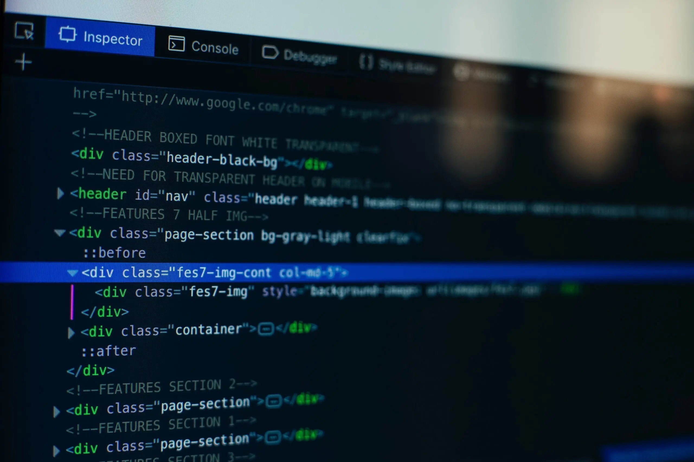

The Basic Language of the Web: HTML
Posted by Laura Jones on Monday,June 21st 2027
All modern websites and web applications are built using three fundamental technologies:HTML, CSS and JAVASCRIPT.These are the languages of the web.
In tis post, let's focus on HTML.We will learn what HTML is all about, And why you too should learn it.
What is HTML?
HTML stands for Hyper T extMarkup Language a markup language that web developers use to structure and describe the conetent of a webpage (not a programming language
HTML consists of elements that describe diffeernt types of content: paragraphs, links, headings ,images, video, etc.Web browsers undesrtand HTML and render HTML code as websites.
In HTML,each element is made up of 3 parts:
- The opening tag
- The closing tag
- The actual element
you can learn more at MDN WEB DOCS
Why should you learn HTML?
Thera are countless reasons for learning HTML the fundamental language of the web.Here are 5 of them:- To be able to use the fundamental web dev language
- To handicraft beautiful websites instead of relying on tools like worpress or Wix
- To build web applications
- To impress friends
- To have fun
Hopefully you learned something new here see new next time!